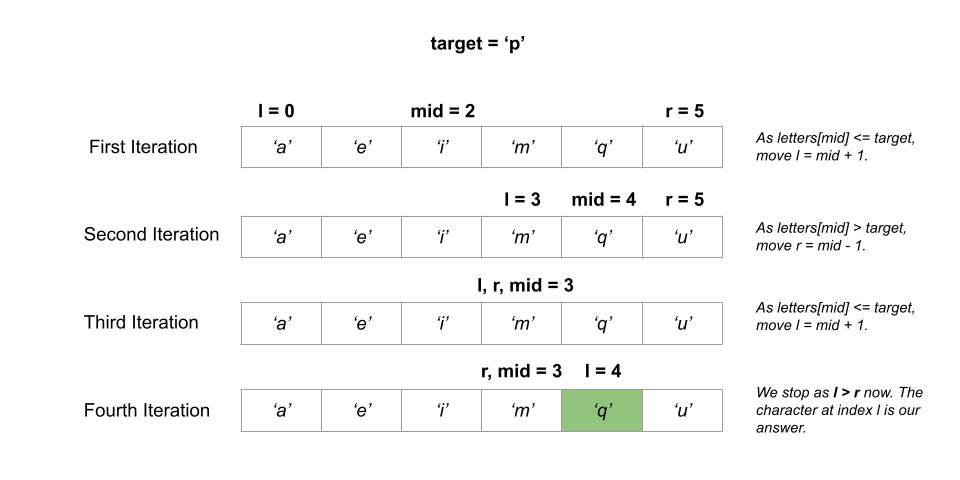

We are given array of characters letters that is sorted in non-decreasing order, and a character target.
Our task is to find the smallest character in letters that is lexicographically greater than target.
If such a character does not exist, we have to return the first character in letters.
We can use brute force to go through all of the characters in letters and compare each of them to target.
When we come across a letter that is lexicographically greater than target, we return it. If no letter
greater than target is found, we return the first character.
Every character has an ASCII value associated with it. For example, the ASCII value of a is
97, b is 98, and so on. We can simply use logical operators
(>, <, ==) to compare two characters that use these ASCII values for
comparison internally.
letters and for each letter, check if letter
> target. If letter > target, return letter.
letter that is lexicographically greater than target. We return
letters[0].
Java
class Solution {
public char nextGreatestLetter(char[] letters, char target) {
for (char letter : letters) {
if (letter > target) {
return letter;
}
}
return letters[0];
}
}
C++
class Solution {
public:
char nextGreatestLetter(vector& letters, char target) {
for (char letter : letters) {
if (letter > target) {
return letter;
}
}
return letters[0];
}
};
Python3
class Solution:
def nextGreatestLetter(self, letters: List[str], target: str) -> str:
for letter in letters:
if letter > target:
return letter
return letters[0]
Here nn
is the number of characters in letters.
Time complexity: O(n)O(n).
letters and compare them to target,
which takes O(n)O(n)
time for all nn
characters.
Space complexity: O(1)O(1).
letter (used in the loop) that takes constant space, we do not
consume any other space.
We are given that the array of characters letters is sorted in non-decreasing order. It means that for
an index i, if letter[i] <= target, all the indices smaller than or equal to
i would also have characters that are lexicographically smaller than target. Our answer
lies in some of the indices from i + 1 to the last index.
If letter[i] > target, all the indices greater than or equal to i would also have
characters that are lexicographically greater than target because letters is sorted. Our
answer is either i or some index smaller than it.
A scenario like this where our task is to search for an element x (or just greater than it) from a given
range (left, right) where all values smaller than x do not satisfy a certain condition and
all values greater than or equal to x satisfy it (or vice-versa), can be solved optimally with a binary
search algorithm. In binary search, we repeatedly divide the solution space where the answer could be in half until
the range contains just one element.
Following the above discussion, we use binary search to solve this problem. We create an integer left
and initialize it to the starting index 0. We also create another integer variable right
and set it to the last index of letters, i.e., letters.length - 1.
We get the middle of the range mid = (left + right) / 2 and compare it with target. If
letters[mid] <= target, we move to the upper half of the range by setting left = mid +
1. Otherwise, we move to lower half of range by setting right = mid - 1 as all the
characters at indices greater or equal to mid would also be greater than target.
The answer would be within the range (left, right) at any point. All the indices smaller than
left would contain characters smaller than target and all characters at indices greater
than right would be greater than target. We continue the search until left <=
right.
When left > right, left denotes the index of the smallest character that is
lexicographically greater than target. This is because all characters at indices greater than right
would be greater than target and character immediately next to index right would be left
(or right + 1) after the completion of binary search algorithm.
Here is a visual representation of an example to illustrate how it works:

left = 0, right = letters.length - 1 and mid to
start the binary search algorithm.
left <= right:
(left, right) in the variable mid = (left + right) /
2.
mid with target. If letters[mid] <=
target, it means all the characters at indices smaller or equal to mid would also be
smaller than target because the characters in letters are sorted. As a result,
we move to upper half of the range by setting left = mid + 1.
mid would also be
greater than target because the characters in letters are sorted. As a result,
we move to lower half of the range by setting right = mid - 1.
left will store the index of the smallest
character that is lexicographically greater than target.
left == letters.length, it means there is no character in letters that is
lexicographically greater than target. We return letters[0]. Otherwise, we return
letters[left] as left holds the smallest character greater than target.
Java
class Solution {
public char nextGreatestLetter(char[] letters, char target) {
int left = 0, right = letters.length - 1, mid;
while (left <= right) {
mid = (left + right) / 2;
if (letters[mid] <= target) {
left = mid + 1;
} else {
right = mid - 1;
}
}
return left == letters.length ? letters[0] : letters[left];
}
}
C++
class Solution {
public:
char nextGreatestLetter(vector& letters, char target) {
int left = 0, right = letters.size() - 1, mid;
while (left <= right) {
mid = (left + right) / 2;
if (letters[mid] <= target) {
left = mid + 1;
} else {
right = mid - 1;
}
}
return left == letters.size() ? letters[0] : letters[left];
}
};
Python3
class Solution:
def nextGreatestLetter(self, letters: List[str], target: str) -> str:
left = 0
right = len(letters) - 1
while left <= right:
mid = (left + right) // 2
if letters[mid] <= target:
left = mid + 1
else:
right = mid - 1
if left == len(letters):
return letters[0]
else:
return letters[left]
Here nn
is the number of characters in letters.
Time complexity: O(logn)O(\log n).
Space complexity: O(1)O(1).
left, right, and mid which take
constant space each, we do not consume any other space.